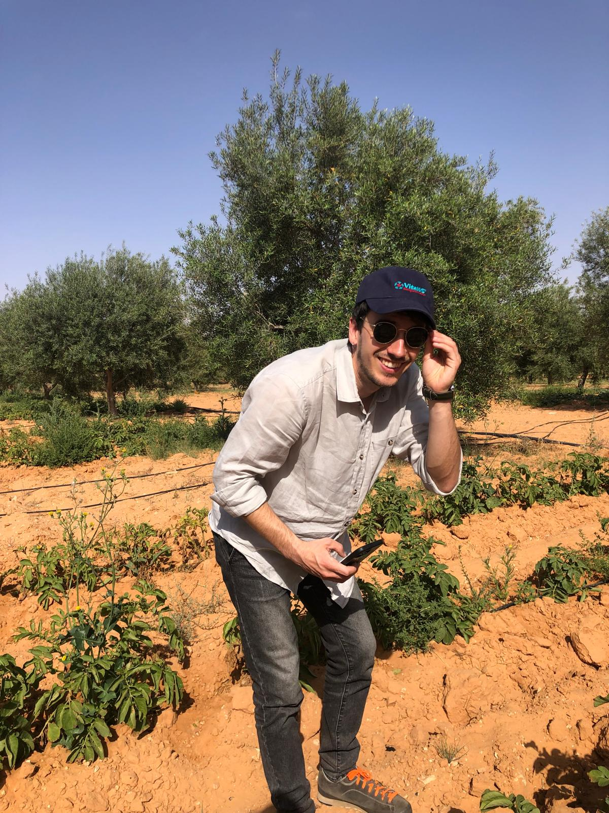

Dietro Ager c'è una persona,
non solo un progetto.
Ricercatore in Agrometeorologia, con anni di esperienza in modellistica idrologica e agronomica applicata alla gestione delle risorse idriche.
Il mio percorso
Ho un dottorato in Agrometeorologia e ho lavorato per anni nella modellistica idrologica e agronomica, con particolare attenzione alla gestione delle risorse idriche. Per molto tempo ho studiato come l'acqua si muove nel suolo, come le colture la usano e come i modelli climatici possono prevederne la disponibilità.
A un certo punto ho capito che la ricerca, da sola, non basta se non arriva a chi lavora la terra. Ho iniziato a interessarmi a come portare strumenti digitali al servizio delle aziende agricole — non come gadget, ma come strumenti concreti per usare l'acqua in modo più efficiente e ridurre il peso della burocrazia sulle persone.

Perché Ager
Ager nasce da un'osservazione semplice: chi lavora la terra passa sempre più tempo a compilare registri e sempre meno tempo a decidere in campo. Ho visto da vicino quanto la modellistica scientifica possa essere utile — se tradotta in uno strumento che si usa davvero, ogni giorno, senza formazione tecnica.
Non voglio costruire un software agricolo generico. Voglio portare la stessa qualità di modellistica che ho usato in anni di ricerca dentro uno strumento che elimina la doppia compilazione, anticipa le condizioni climatiche e restituisce tempo a chi lo usa.

La missione
Usare l'acqua in modo più efficiente e ridurre il peso della burocrazia sulle persone: sono i due obiettivi che guidano ogni scelta tecnica di Ager. Non previsioni per il gusto della precisione, ma dati che si traducono in decisioni più semplici sul campo.
Credo in un'agricoltura che usa la scienza senza esserne appesantita — dove la tecnologia sparisce nello sfondo e resta solo il tempo recuperato per il lavoro che conta davvero.
Competenza scientifica, missione concreta.
Dottorato in Agrometeorologia
Formazione scientifica applicata alla relazione tra clima, suolo e colture.
Modellistica idrologica
Anni di esperienza nella gestione e previsione delle risorse idriche in agricoltura.
Missione concreta
Portare strumenti digitali al servizio di chi lavora la terra ogni giorno.
Vuoi conoscere meglio il progetto?
Scrivimi per parlare di come Ager può inserirsi nella tua azienda agricola.
Parliamone